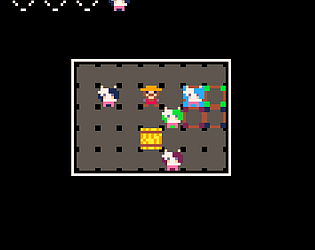

I originally made this game in 2024, when I got my Miyoo Mini and I wanted to play a game I've actually made on it. I originally just shared it via email with a friend, but in late 2025, I edited the more personal parts of the game and uploaded it to Itch.io.
Like Who Let The Cows Out, this game is made in Pico-8. It shares a lot of the same controls and same mechanics, but also adds a couple new ones. The biggest difference is that instead of trying to push cows out of the barn, you're trying to put them in specific spots on the map.
The level design isn't as sharp as the first game in my opinion, but it's fine enough. I'd probably need to go back to it and add more variety to the puzzles. Still, I think the game holds well.